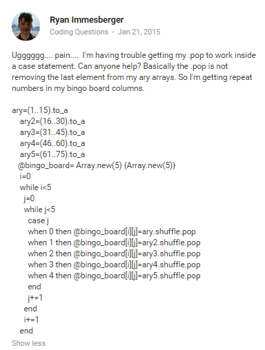

Asking good questions is truly a powerful skill to have. Using the correct vocabulary and including enough specifics are tools that you need to get helpful and relevant responses. I have had many questions during the phase 0 experience and I’ve gotten some great responses. The Google+ community has been invaluable during this phase, and really kept me sane over these 9 weeks. Here is an example of one of my questions in phase 0:

I tried to be descriptive and include enough specifics to get a specific answer. In this case I received the exact solution I was looking for thanks to one of my cohort members.
RyanImmesberger@gmail.com
Twitter: @rimmesbe